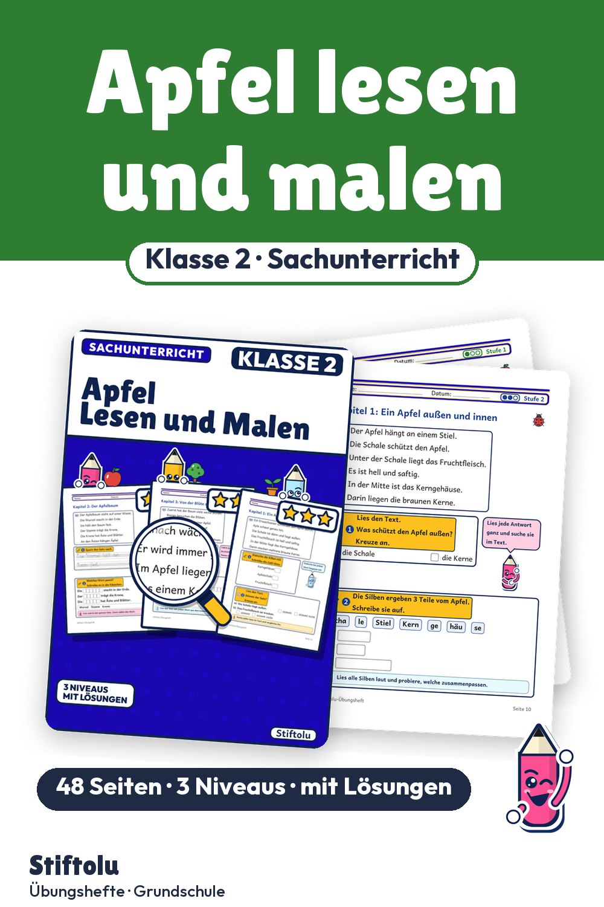
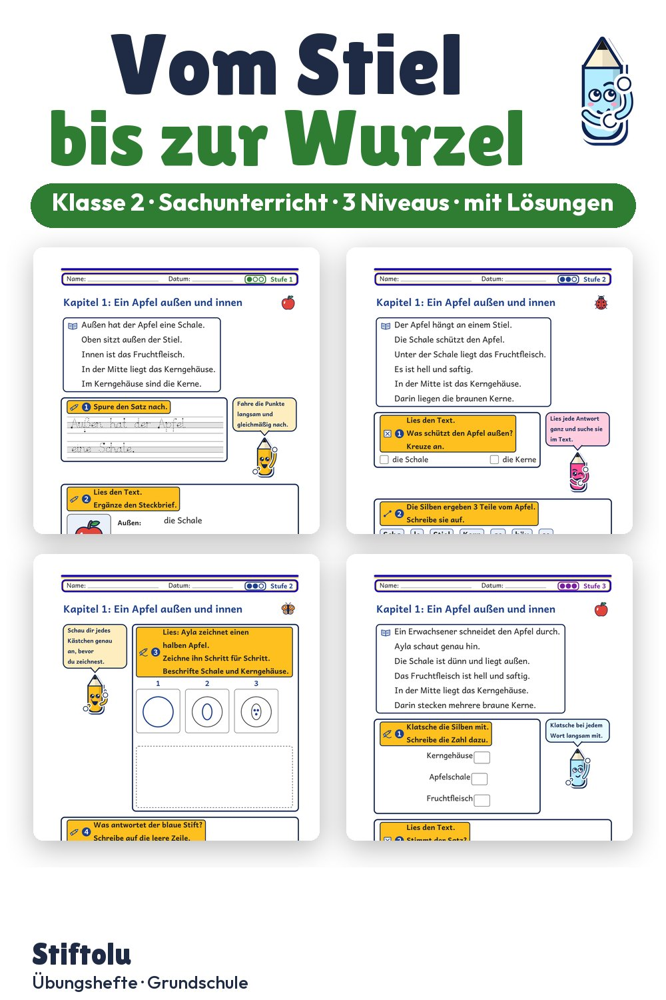

Werbung · Übungsheft von Stiftolu
Vom Stiel bis zur Wurzel: Apfel und Apfelbaum in Klasse 2 beschriften


Was tut die Wurzel, wozu hat der Apfel Kerne? Antworten finden Kinder der zweiten Klasse beim Lesen, Malen und Beschriften. Drei Kapitel führen von der Frucht über den Baum bis zur Blüte, in 3 Niveaus mit Partneraufgaben. Im Shop Stiftolu liegen 48 Seiten Sachunterricht mit Lösungen und Handreichung, erhältlich auf eduki.